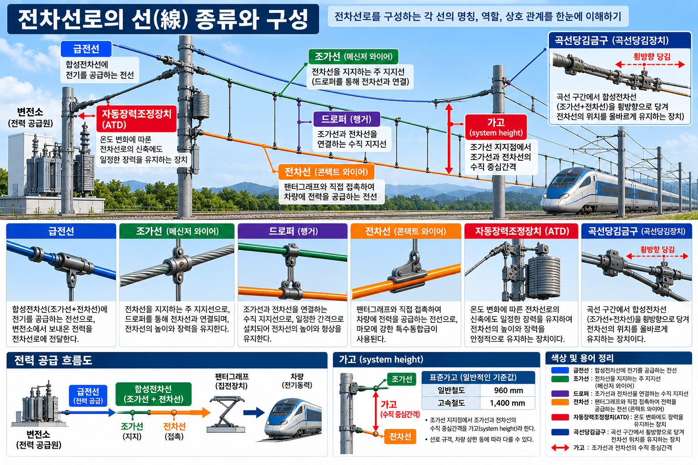
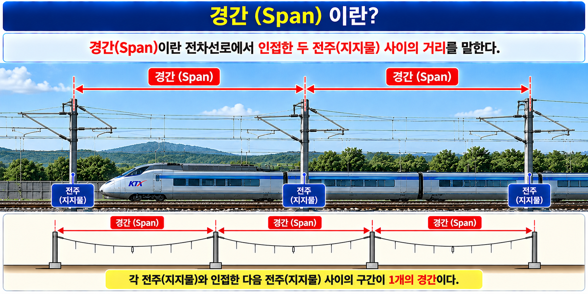

전차선로의 핵심 구성요소 6종을 구분한다.
| 구성요소 | 영문 명칭 | 주요 역할 | 위치 관계 |
|---|---|---|---|
| 전차선 | Contact Wire | 팬터그래프와 직접 접촉하여 전력 공급 | 조가선 아래에 매달림 |
| 조가선 | Messenger Wire | 전차선을 일정 높이로 지지 | 전차선 위에 설치 |
| 드로퍼 / 행어 | Dropper / Hanger | 조가선과 전차선을 수직으로 연결 | 조가선↔전차선 사이 |
| 브래킷 | Bracket | 지지물에서 조가선을 측방 지지 | 지지물(전주) 선단 |
| 금구류 | Hardware Fittings | 전선과 지지물 연결·고정 철물 | 각 연결 접점 |
| 경간 | Span | 인접한 두 지지물 사이의 거리 | 지지물↔지지물 사이 |

경간이란 전차선로에서 인접한 두 지지물 사이의 거리를 말한다.

| 문항 | 정답 | 핵심 해설 |
|---|---|---|
| Q1 | ③ | 교류식 전기철도: 고전압 송전으로 동일 전력을 더 작은 전류로 전달. 전력 손실이 적고 대출력 견인이 가능해 소형으로도 중량 열차를 운행할 수 있다. 절연 이격 거리는 더 넓어야 하고 통신 유도장해는 큰 편이다. |
| Q2 | ③ | 일반인이 접근하기 어려운 지역: 연속 정격전위 150V 이하(100V 아님). 일반인이 접근하기 쉬운 지역: 연속 정격전위 60V 이하. 두 경우 모두 인체통과 기준 15mA 이하. |
| Q3 | ① | 카테너리 가선방식의 3대 구성요소: 전차선(Contact Wire) — 팬터그래프와 직접 접촉하는 동선, 조가선(Messenger Wire) — 전차선을 지지하는 상부 선, 드로퍼(Dropper) — 조가선에서 전차선을 일정 간격으로 매달아 수평을 유지하는 부재. |